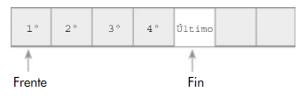
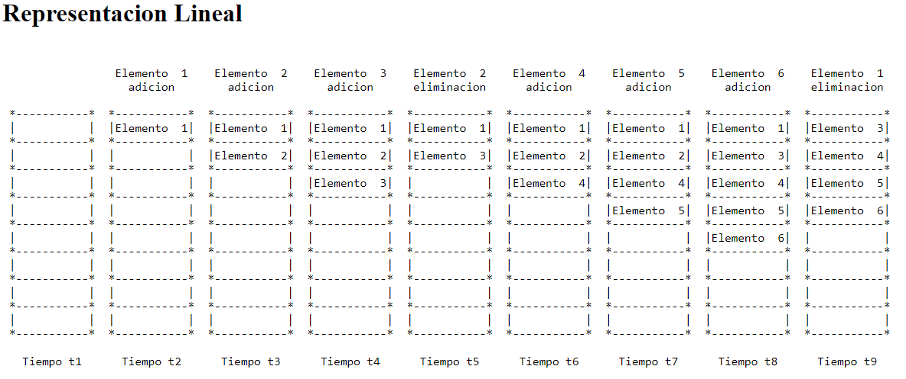

TEMARIO
ARREGLOS BIDIMENSIONALES
¿QUÉ SON LOS ARREGLOS BIDIMENSIONALES?
Los arreglos bidimensionales son tablas de valores. Cada elemento de un arreglo bidimensional está simultáneamente en una fila y en una columna.
En matemáticas, a los arreglos bidimensionales se les llama matrices, y son muy utilizados en problemas de Ingeniería.
En un arreglo bidimensional, cada elemento tiene una posición que se identifica mediante dos índices: el de su fila y el de su columna.
REPRESENTACIÓN
APLICACIONES
Es utilizado cuando queremos guardar mucha información sobre un tipo de dato en específico en distintas filas. Por ejemplo, si quieres crear una base de datos donde queremos guardar varios nombres, en un vector no se podría hacer pues solo podrías guardar un nombre, en cambio, con un arreglo bidimensional puedes guardar un nombre por fila, por lo tanto, si creamos varias filas podemos guardar varios nombres.
Al tratar un arreglo que tiene dos dimensiones (arreglo bidimensional o matriz) se requieren dos índices para identificar a cada elemento dentro de él. Uno de los índices indica el renglón y un segundo índice indica la columna de cada elemento. Se puede imaginar un arreglo bidimensional como una tabla que tiene cierto número de renglones y columnas, o como un plano con una combinación de coordenadas (x, y). Igual que en los arreglos unidimensionales, en los arreglos bidimensionales resulta más conveniente almacenar valores dentro de un arreglo apoyándose en ciclos que controlen adecuadamente ambos índices de cada celda en el arreglo.
ARREGLOS MULTIDIMENSIONALES
DEFINICIÓN
Los arreglos multidimensionales son una ampliación de las matrices de dos dimensiones y utilizan subíndices adicionales para la indexación. Un arreglo 3D, por ejemplo, utiliza tres subíndices. Los dos primeros son como una matriz, pero la tercera dimensión representa páginas u hojas de elementos.
REPRESENTACIÓN
APLICACIONES
En el caso de arreglo Multidimensional, lo más común es usar matrices, las cuales pueden ocuparse para hacer operaciones con matrices en términos matemáticos: Suma de matrices, Resta de matrices, multiplicación de matrices, determinación de matrices y resolución de sistemas de ecuaciones.
ARREGLOS PARALELOS
DEFINICIÓN
Este concepto se da cuando hay una relación entre las componentes de igual subíndice (misma posición) de un array y otro. Es decir hay una relación entre cada componente del array de nombres y el array de las edades.
Dos o mas arrays que utilizan el mismo subíndice para referirse a términos homólogos se llaman arrays paralelos.
REPRESENTACIÓN DE ARREGLOS PARALELOS
APLICACIONES
Si tenemos un array de tipo string en la que se almacenan los nombres de personas y un array de 5 enteros en la que se almacenan las edades de dichas personas, decimos que el array nombres es paralelo al array edades si en la componente 0 del array de nombres se almacena información relacionada a una persona (Juan – 12 años)
Es decir hay una relación entre cada componente del array de nombres y el array de las edades.
Esta relación la conoce únicamente el programador y se hace para facilitar el desarrollo de algoritmos que procesen los datos almacenados en las estructuras de datos.
COLAS
DEFINICIÓN
Una cola es una estructura de datos lineal o una colección en Java que almacena elementos en un orden FIFO (primero en entrar, primero en salir). La colección de la cola tiene dos extremos, es decir, delantero y trasero. Los elementos se agregan en la parte trasera y se eliminan por la parte delantera.
REPRESENTACIÓN DE COLAS
APLICACIONES
Una cola funciona como una fila o cola de personas, que esperan su turno para ser atendidas, la primera persona atendida es siempre la primera de la fila y cuando llega una persona y queremos incorporarla a cola o adicionarla debemos hacerlo por detrás de la ultima persona en la cola.
LISTAS CIRCULARES
DEFINICIÓN
Una lista circular es una lista lineal en la que el último nodo a punta al primero. Las listas circulares evitan excepciones en las operaciones que se realicen sobre ellas. No existen casos especiales, cada nodo siempre tiene uno anterior y uno siguiente.
En algunas listas circulares se añade un nodo especial de cabecera, de ese modo se evita la única excepción posible, la de que la lista esté vacía.
REPRESENTACIÓN
OPERACIONES CON LISTA
- Añadir o insertar elementos.
- Buscar o localizar elementos.
- Borrar elementos.
- Moverse a través de la lista, siguiente.
LISTAS DOBLEMENTE ENLAZADAS
DEFINICIÓN
- Es un tipo de lista enlazada que permite moverse hacia delante y hacia atras.z
- Cada nodo de una lista doblemente enlazada tiene dos enlaces, ademas de los campos de datos. Un enlace, el derecho, se utiliza para navegar la lista hacia delante. El otro enlace, el isquierdo, se utiliza para navegar la lista hacia atras.
- Las Listas pueden navegarse hacia delante y hacia atras.
- Las Listas pueden crear, actualizar y eliminar elementos.
- En las Listas la posicion de los elementos es relevante.
- Las Listas admiten elementos duplicados.
- Las Listas tienen dos protocolos, uno secuencial y el otro directo.
REPRESENTACIONES
OPERACIONES CON LISTAS DOBLEMENTE ENLAZADAS
- Añadir o insertar elementos.
- Buscar o localizar elementos.
- Borrar elementos.
- Moverse a través de la lista, siguiente y anterior.